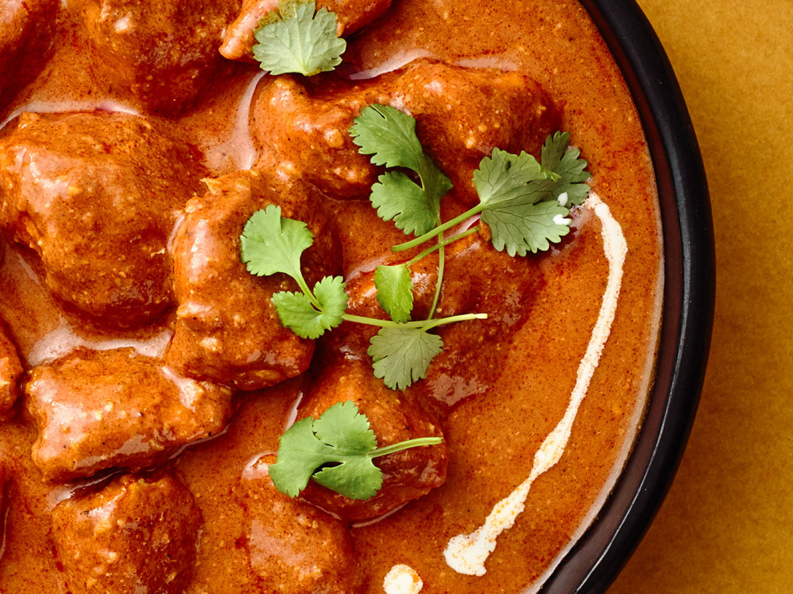

Ingredients
- 500g chicken, cut into pieces
- 1 cup tomato puree
- 1/2 cup cream
- 2 tbsp butter
- Spices: garam masala, turmeric, chili powder, salt
Instructions
- Marinate chicken with spices and yogurt for 1 hour.
- Sauté butter in a pan, add tomato puree and cook for 5-7 minutes.
- Add chicken and cook until done.
- Stir in cream and simmer for 5 minutes. Serve hot.
Tips
- Use boneless chicken for easier cooking.
- Simmer on low heat for a creamier texture.
- Serve with naan or steamed rice.